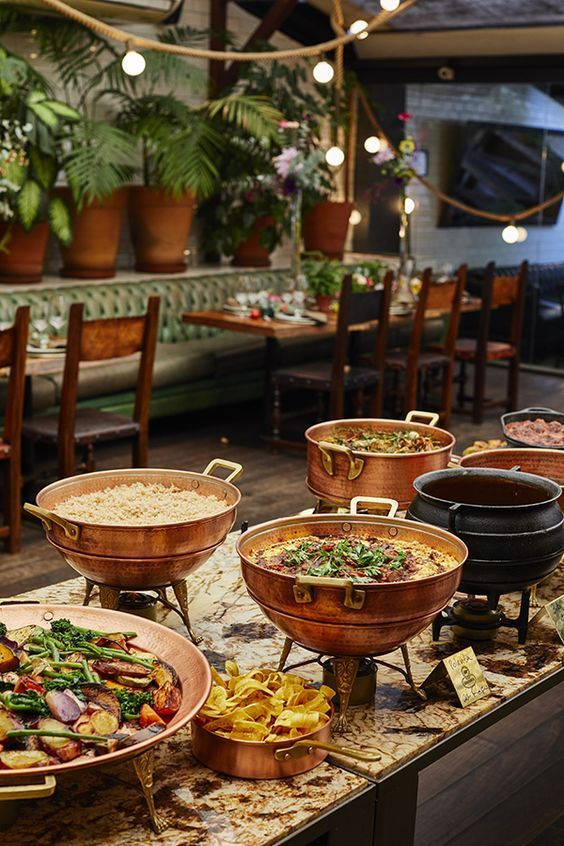
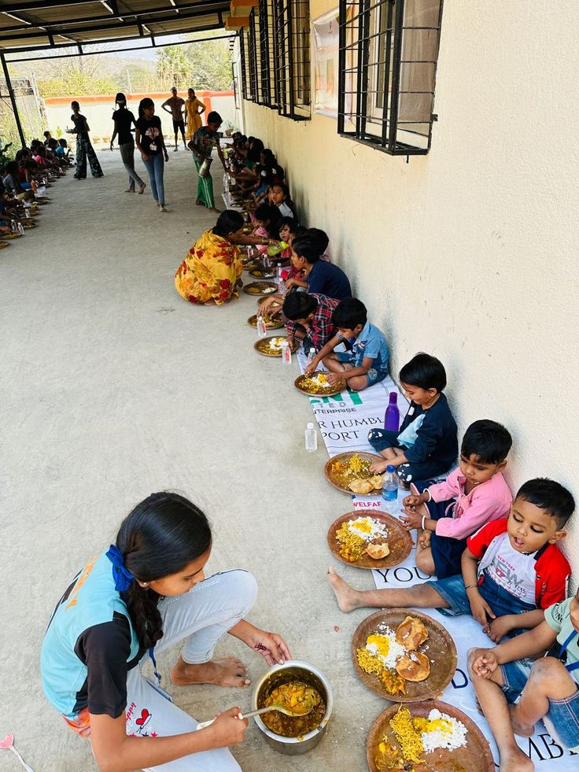
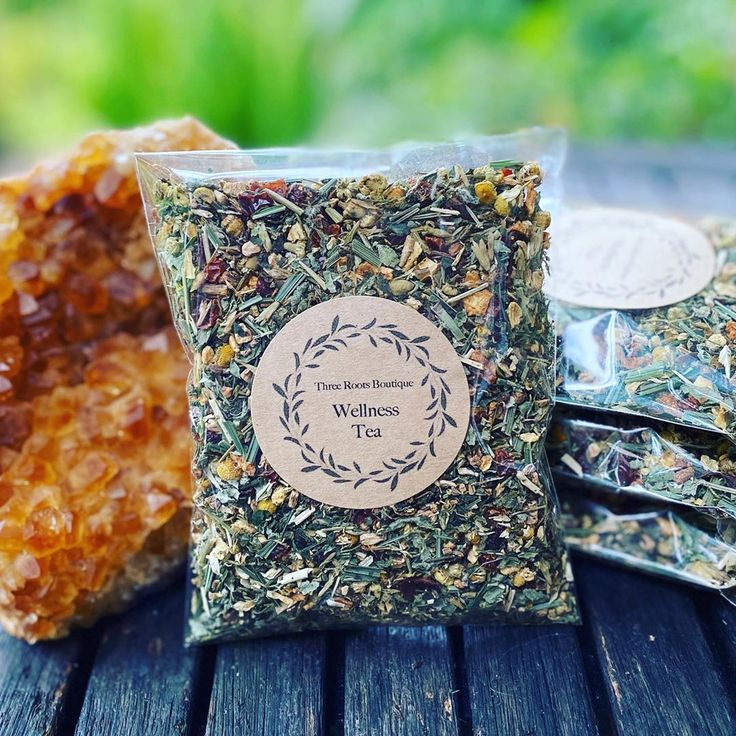

Our Services
Catering and Events
Bring the taste of the Himalayas to your special occasions! We offer comprehensive catering services for corporate events, weddings, and private gatherings. Our team specializes in creating authentic Nepali culinary experiences that will delight your guests.
Workspace and Community Hub
More than just a cafe, we provide a welcoming workspace for digital nomads, students, and professionals. With free high-speed Wi-Fi, comfortable seating, and plenty of power outlets, we support your productivity while offering a warm, inspiring environment.
Cultural Workshops
We regularly host cultural workshops where you can learn about Nepali tea traditions, cooking classes for local cuisine, and language exchange sessions. Connect with local culture and meet fellow enthusiasts in our community-focused space.

Local Product Sales
Support local artisans and farmers! We sell a curated selection of locally sourced teas, spices, handicrafts, and other traditional Nepali products. Take a piece of Nepal home with you and support sustainable local economies.
